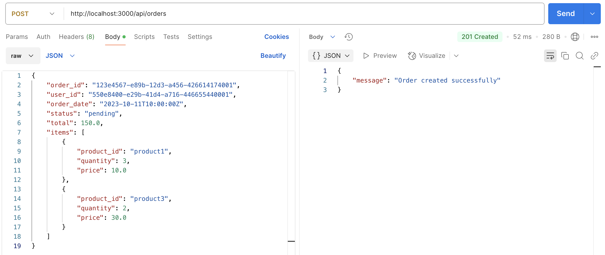
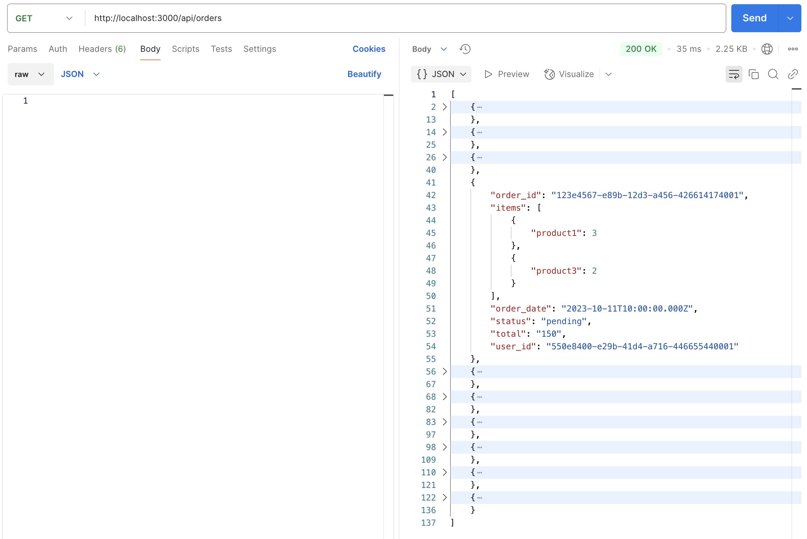
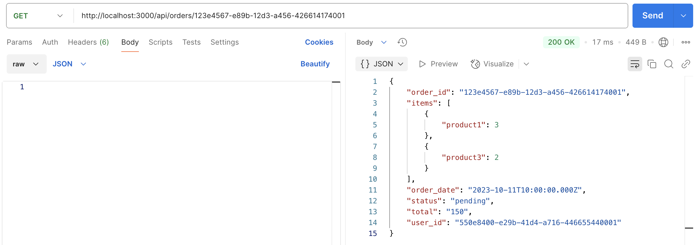
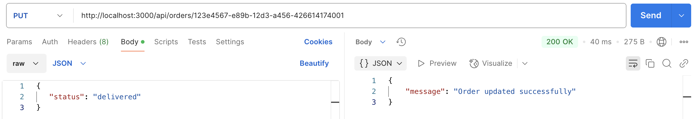
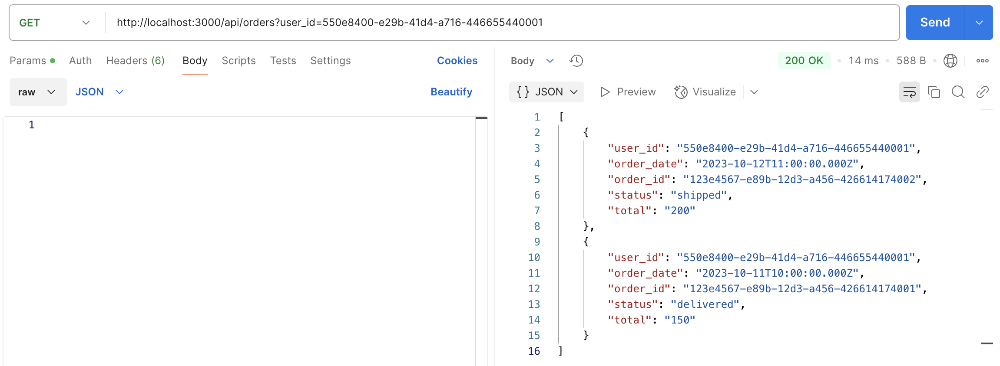
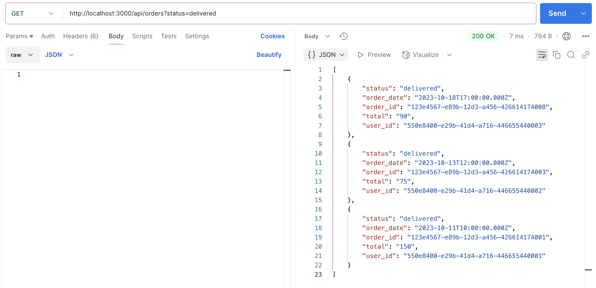

Desarrollo de una API REST para gestión historial de pedidos y seguimiento en tiempo real con Express y Cassandra#
Manuel Torres
Bases de datos a gran escala. Máster en Ingeniería Informática. Universidad de Almería
Resumen#
El desarrollo de aplicaciones escalables y altamente disponibles es un desafío clave en el mundo del comercio electrónico. A medida que crece el volumen de usuarios y transacciones, es fundamental contar con una infraestructura capaz de manejar grandes cantidades de datos sin comprometer el rendimiento. En este tutorial exploraremos cómo diseñar y construir una API REST eficiente utilizando Apache Cassandra como base de datos, que ofrece una arquitectura distribuida para garantizar velocidad y fiabilidad en la gestión de pedidos.
A lo largo del proceso se verá cómo adaptar el diseño del esquema de datos a las consultas más comunes, optimizando la forma en que se almacenan y recuperan los pedidos y sus detalles. También se verán estrategias para manejar actualizaciones y filtrados eficientes, asegurando que la API no solo sea funcional, sino también robusta y esté preparada para escalar. Al finalizar, se habrá construido una solución que refleja las mejores prácticas en el uso de bases de datos NoSQL dentro de un entorno realista de comercio electrónico.
Diseñar una API REST eficiente para la gestión de pedidos utilizando Express y Cassandra.
Implementar un esquema de base de datos en Cassandra optimizado para consultas rápidas y escalables.
Desarrollar endpoints para crear, consultar y actualizar pedidos en la API REST.
Configurar un entorno de desarrollo con Docker para facilitar la implementación y pruebas de la API.
Aplicar las mejores prácticas en el diseño de esquemas de datos y consultas en Cassandra.
Tip
Disponible el repositorio de GitHub, window=”_blank” con el código fuente de la API REST.
Introducción#
En el vertiginoso mundo del comercio electrónico, la capacidad de manejar grandes volúmenes de pedidos con rapidez y eficiencia es crucial para brindar una experiencia satisfactoria a los clientes. Empresas como Amazon, Alibaba y otros gigantes del sector procesan millones de transacciones diarias, lo que exige soluciones de almacenamiento escalables, resilientes y con tiempos de respuesta ultrarrápidos.
En este contexto Apache Cassandra se presenta como una base de datos NoSQL ideal para gestionar información distribuida a gran escala. Su arquitectura descentralizada y su modelo de replicación permiten garantizar alta disponibilidad, tolerancia a fallos y rendimiento óptimo sin importar el volumen de datos ni la cantidad de usuarios simultáneos.
En este tutorial se plantea el desarrollo de una API REST para la gestión de pedidos en una plataforma de comercio electrónico, utilizando Cassandra como base de datos. Se implementarán funcionalidades clave, como la creación y consulta de pedidos y la búsqueda eficiente según distintos criterios.
Descripción del problema#
Nuestra empresa de comercio electrónico ha crecido exponencialmente en los últimos años. A medida que la cantidad de pedidos diarios aumenta, la infraestructura de bases de datos relacionales ha comenzado a mostrar signos de agotamiento: los tiempos de consulta se vuelven más lentos, las actualizaciones generan bloqueos y la capacidad de escalar horizontalmente es limitada.
Para enfrentar este reto, el equipo de desarrollo ha decidido migrar la gestión de pedidos a Apache Cassandra, una base de datos NoSQL diseñada para manejar grandes volúmenes de datos de manera distribuida, garantizando alta disponibilidad y rendimiento sin importar la carga.
Una de las tareas será desarrollar una API REST optimizada para la gestión de pedidos, aprovechando la estructura de datos de Cassandra para garantizar consultas eficientes y escalabilidad. La API permitirá:
Registrar nuevos pedidos con los productos seleccionados.
Consultar pedidos por usuario y por estado de procesamiento.
Obtener el detalle completo de un pedido.
Actualizar el estado de un pedido a medida que avanza en el proceso logístico.
Dado el modelo de Cassandra, será fundamental diseñar correctamente las tablas y las claves de partición para asegurar consultas rápidas y eficientes sin necesidad de realizar joins.
Configuración del entorno de base de datos#
Para facilitar el desarrollo de la API, se usará una instalación local de Cassandra con Docker. De esta forma, se podrá simular un entorno de producción sin necesidad de configuraciones complejas ni servidores dedicados. El archivo docker-compose.yml contendrá la configuración necesaria para levantar un contenedor de Cassandra con las opciones de red y volúmenes adecuados. También se incluirá un contenedor para la interfaz web de Cassandra, que permitirá visualizar y explorar los datos de forma gráfica.
Note
Aunque no es habitual forzar una IP específica en un despliegue real, en este caso se asignará una IP fija al contenedor de Cassandra para facilitar la conexión desde Cassandra Web, ya que éste necesita conocer la dirección IP del nodo de Cassandra.
version: "3.8"
networks:
pedidos-net:
driver: bridge
name: pedidos-net
ipam:
driver: default
config:
- subnet: "10.0.0.0/24"
services:
cassandra:
image: cassandra:4.1.8
container_name: cassandra
hostname: cassandra
ports:
- "9042:9042"
environment: &environment
CASSANDRA_USER: cassandra
CASSANDRA_PASSWORD: cassandra
volumes:
- ./data/cassandra:/var/lib/cassandra
networks:
pedidos-net:
ipv4_address: 10.0.0.98
healthcheck:
test:
[
"CMD",
"cqlsh",
"-u cassandra",
"-p cassandra",
"-e describe keyspaces",
]
interval: 15s
timeout: 10s
retries: 8
cassandra-web:
platform: linux/amd64
image: dcagatay/cassandra-web:latest
container_name: cassandra-web
depends_on:
cassandra:
condition: service_healthy
ports:
- 4000:3000
networks:
pedidos-net:
ipv4_address: 10.0.0.99
environment:
CASSANDRA_HOST_IPS: 10.0.0.98
CASSANDRA_PORT: 9042
restart: unless-stopped
Servicios#
El archivo docker-compose.yml define tres servicios:
cassandra: Contenedor de Cassandra con la versión 4.1.8. Se asigna un puerto para la conexión CQL y se mapea un volumen local para persistir los datos de la base de datos.
cassandra-web: Contenedor de la interfaz web de Cassandra, que permite visualizar y explorar los datos de la base de datos. Se asigna un puerto para acceder a la interfaz desde el navegador.
Instrucciones de instalación#
Para instalar y ejecutar la aplicación, necesitas tener Docker, Docker Compose y Node.js instalados en tu sistema. Luego, sigue estos pasos:
Clona el repositorio:
git clone https://github.com/ualmtorres/ExpressCassandraPedidos.git cd ExpressCassandraPedidos
Ejecuta Docker Compose para levantar los servicios:
docker-compose up -d
Instala las dependencias del proyecto:
npm installInicia la aplicación:
npm startAccede a la interfaz web de Cassandra en
http://localhost:4000.Accede a los endpoints de la API REST en
http://localhost:3000.
Con estos pasos, tendrás el entorno de desarrollo configurado y la API REST en funcionamiento.
Cassandra#
Apache Cassandra, window=”_blank” es una base de datos NoSQL distribuida y altamente escalable, diseñada para manejar grandes volúmenes de datos en múltiples nodos sin un único punto de fallo. Su arquitectura descentralizada permite que cada nodo en el clúster sea igual, eliminando la dependencia de un nodo maestro y garantizando alta disponibilidad y tolerancia a fallos. Esto la convierte en una opción ideal para aplicaciones que requieren un rendimiento consistente y la capacidad de escalar horizontalmente sin interrupciones.
Una de las características más destacadas de Cassandra es su modelo de datos flexible basado en tablas, que permite almacenar datos estructurados y semiestructurados. Sin embargo, a diferencia de las bases de datos relacionales tradicionales, en Cassandra es crucial diseñar las tablas teniendo en cuenta las consultas que se realizarán. Esto se debe a que Cassandra está optimizada para operaciones de escritura rápidas y consultas eficientes, pero impone ciertas restricciones en cómo se pueden usar las columnas en los filtros y ordenaciones.
En Cassandra, las tablas se diseñan con una clave de partición que determina cómo se distribuyen los datos entre los nodos del clúster. Las consultas eficientes deben incluir la clave de partición para localizar rápidamente los datos en el nodo correcto. Además, las columnas que se utilizan en las cláusulas de filtro y ordenación deben ser parte de la clave de partición o de la clave de clustering. Las reglas básicas para diseñar tablas en Cassandra son:
La clave de partición debe ser incluida en todas las consultas para garantizar una búsqueda eficiente.
Las columnas utilizadas en las cláusulas
WHEREdeben ser parte de la clave de partición o de la clave de clustering. Además, deben aparecer en el mismo orden que en la definición de la tabla sin saltos. Es decir, si la clave de partición es(a, b), las consultas podrían incluirWHERE a = ... AND b = ...,WHERE a, pero noWHERE b.Las columnas utilizadas en las cláusulas
ORDER BYdeben ser parte de la clave de clustering y deben seguir el orden definido en la tabla.
Estas reglas aseguran que las consultas sean rápidas y escalables, evitando operaciones costosas como los joins y los escaneos completos de tablas, que no son eficientes en un entorno distribuido como Cassandra. Al diseñar las tablas de acuerdo con las consultas previstas, se puede aprovechar al máximo el rendimiento y la escalabilidad que ofrece Cassandra, garantizando una experiencia de usuario óptima incluso bajo cargas de trabajo intensivas. No obstante, esto implica un enfoque diferente al de las bases de datos relacionales, donde las consultas pueden ser más flexibles y adaptarse a diferentes esquemas de tablas, lo que requiere un análisis cuidadoso de los requisitos y patrones de acceso a los datos. Además, supone un fuerte acoplamiento entre el modelo de datos y las consultas, lo que puede dificultar la evolución del sistema a medida que cambian los requisitos.
Note
En este tutorial, window=”_blank” se presentan los conceptos y características de Cassandra, así como en las mejores prácticas para diseñar esquemas de tablas eficientes. También, se exploran las operaciones CRUD básicas y algunas consultas avanzadas en Cassandra. Además, se muestra cómo crear una API REST con Express y Cassandra para gestionar usuarios a modo de ejemplo práctico.
Uso básico del driver de Cassandra#
Para interactuar con Cassandra desde una aplicación Node.js, es necesario utilizar un driver que permita establecer la conexión, enviar consultas y recibir respuestas. En este caso, se utilizará el driver oficial cassandra-driver, que proporciona una interfaz sencilla y eficiente para trabajar con la base de datos.
Previamente, es necesario un proyecto base Express con Node.js. Si no tienes uno, puedes crearlo con el siguiente comando:
npx express-generator --no-view ExpressCassandraPedidos
cd ExpressCassandraPedidos
npm install
Note
Puedes seguir este tutorial para crear una API REST con Express, window=”_blank” si necesitas más detalles sobre la creación de una aplicación Express.
Para instalar el driver, ejecuta el siguiente comando en la raíz del proyecto:
npm install cassandra-driver
Conexión a Cassandra#
En primer lugar, se creará un archivo cassandra.js en la carpeta db del proyecto para configurar la conexión a Cassandra y exportar el cliente de Cassandra para su uso en otras partes de la aplicación. En este archivo se configurará la conexión a Cassandra y se creará un cliente de Cassandra para interactuar con la base de datos. La ventaja de crear un módulo de conexión a Cassandra es que se puede reutilizar en toda la aplicación para realizar operaciones CRUD en la base de datos.
El archivo db/cassandra.js podría tener el siguiente contenido:
const cassandra = require('cassandra-driver');
const client = new cassandra.Client({
contactPoints: ['192.168.1.132'], <1> // Cambiar por la IP del equipo donde se ejecuta Cassandra
localDataCenter: 'datacenter1', ②
keyspace: 'ecommerce', ③
authProvider: new cassandra.auth.PlainTextAuthProvider('cassandra', 'cassandra') ④
});
module.exports = client;
Dirección IP del nodo en que se ejecuta Cassandra, no la del contenedor.
Nombre del centro de datos configurado en Cassandra.
Nombre del keyspace que se utilizará en la aplicación.
Credenciales de acceso a Cassandra.
En este archivo, se importa la biblioteca cassandra-driver y se crea un cliente de Cassandra con la configuración necesaria para conectarse a Cassandra en el centro de datos datacenter1 (el predeterminado) y el keyspace ecommerce. Se utilizan las credenciales cassandra/cassandra para autenticarse en la base de datos, que son las que se han configurado en el contenedor de Cassandra.
La conexión se cerrará automáticamente al finalizar cada operación de la API, por lo que no será necesario cerrarla explícitamente. Este enfoque permite reutilizar la conexión a Cassandra en todas las operaciones CRUD de la API REST y simplifica la gestión de la conexión en la aplicación.
Operaciones básicas#
Para realizar operaciones CRUD en Cassandra, se pueden utilizar las funciones proporcionadas por el driver cassandra-driver. Normalmente, las operaciones se realizan mediante el método execute del cliente de Cassandra, que permite enviar consultas CQL y recibir los resultados correspondientes.
El método execute#
La clave para interactuar con una base de datos Cassandra utilizando el driver para Node.js es el método execute(). Este método permite ejecutar consultas CQL en la base de datos y obtener los resultados. Devuelve un objeto Promise que se puede manejar de forma asíncrona con async/await o con then/catch. Dentro de esa promesa, se pueden acceder a los resultados de la consulta y manejar los errores si los hubiera.
El método execute() tiene la siguiente sintaxis:
client.execute(query, params, { prepare: true });
Donde:
query: Es la consulta CQL que se desea ejecutar. Puede contener marcadores de posición para los parámetros. Por ejemplo,SELECT * FROM users WHERE id = ?.params: Son los parámetros de la consulta, si los hubiera. Se pasan como un array en el mismo orden en que aparecen los marcadores de posición en la consulta. Por ejemplo,[123].{ prepare: true }: Indica que la consulta debe ser preparada antes de ejecutarse. Esto mejora el rendimiento de las consultas repetitivas.
Lanzando consultas#
A continuación, se muestra un ejemplo de cómo lanzar una consulta SELECT en Cassandra utilizando el método execute():
try {
const result = await client.execute('SELECT * FROM orders_by_status WHERE status = ?', [status], { prepare: true }); <1>
res.status(200).send(result.rows); <2>
} catch (error) {
res.status(500).send({ error: 'Failed to fetch orders by status' });
}
<1> Se ejecuta la consulta CQL con el estado como parámetro.
<2> Se envían los resultados de la consulta al cliente. Los resultados se encuentran en result.rows.
El objeto rows
El objeto rows contiene los resultados de la consulta en forma de un array de objetos. Cada objeto representa una fila de la tabla y contiene las columnas correspondientes a los campos seleccionados en la consulta. Cada fila es accedida por su índice en el array, y los campos de la fila se acceden por su nombre. Por ejemplo, si la consulta selecciona los campos id, name y email, se puede acceder a ellos de la siguiente manera:
const id = result.rows[0].id;
const name = result.rows[0].name;
const email = result.rows[0].email;
Este objeto ofrece un método .rowLength para obtener el número de filas devueltas por la consulta, y un método .first() para obtener la primera fila de los resultados. Además, se pueden acceder a las columnas de cada fila por su nombre, como se muestra en el ejemplo anterior.
El método batch#
El método batch() permite agrupar varias operaciones de escritura en una única transacción atómica. Esto es útil cuando se necesita garantizar la consistencia de los datos en varias tablas y se quiere asegurar que todas las operaciones se realicen correctamente o ninguna de ellas. El método batch() tiene la siguiente sintaxis:
const queries = [
{ query: 'INSERT INTO users (id, name) VALUES (?, ?)', params: [123, 'Alice'] },
{ query: 'INSERT INTO orders (id, user_id, total) VALUES (?, ?, ?)', params: [456, 123, 100.0] }
];
client.batch(queries, { prepare: true });
Estructura de la base de datos#
Para gestionar los pedidos en una plataforma de comercio electrónico, es necesario diseñar una estructura de base de datos eficiente que permita almacenar los pedidos de forma escalable y permita consultar los datos de forma rápida. En Cassandra, el diseño de las tablas es fundamental para garantizar un rendimiento óptimo y una alta disponibilidad de los datos. En este caso, se propondrá un esquema de base de datos para almacenar los pedidos y los productos asociados, teniendo en cuenta las consultas que se realizarán con mayor frecuencia.
Creación del keyspace#
El primer paso es crear un keyspace en Cassandra para almacenar las tablas relacionadas con los pedidos. El keyspace es el contenedor lógico de las tablas y define la replicación y las estrategias de compresión que se aplicarán a los datos. En este caso, se creará un keyspace llamado ecommerce con una replicación de red simple y una estrategia de compresión de datos por defecto.
Para crear el keyspace ecommerce, se puede utilizar la siguiente consulta CQL:
CREATE KEYSPACE IF NOT EXISTS ecommerce
WITH replication = {
'class': 'SimpleStrategy',
'replication_factor': 1 <1>
};
<1> Factor de replicación para garantizar la disponibilidad de los datos.
En este caso se utiliza una replicación de red simple con un factor de replicación de 1, lo que significa que los datos se replicarán en un único nodo. Esto se debe a que estamos en un entorno de desarrollo local y no necesitamos replicación para tolerancia a fallos. En un entorno de producción, se debería ajustar el factor de replicación en función de los requisitos de disponibilidad y tolerancia a fallos del sistema.
Creación de las tablas#
A continuación, se crearán las tablas necesarias para almacenar los pedidos y los productos asociados. Se utilizarán tres tablas para gestionar los pedidos: orders, orders_by_user y orders_by_status. Estas tablas permitirán almacenar los pedidos, consultar los pedidos de un usuario específico y buscar los pedidos por estado, respectivamente.
Tabla orders#
La tabla orders almacenará los detalles de los pedidos, incluyendo el ID del pedido, el ID del usuario, la fecha del pedido, el estado del pedido, el total y los productos asociados. Para crear la tabla orders, se puede utilizar la siguiente consulta CQL:
CREATE TABLE ecommerce.orders (
order_id UUID PRIMARY KEY,
user_id UUID,
order_date TIMESTAMP,
status TEXT,
total DECIMAL,
items LIST<FROZEN<map<TEXT, INT>>>, -- Lista de productos con cantidad { "product_id": cantidad }
);
Como la clave de partición es order_id, los pedidos se distribuirán por ID de pedido en los nodos de Cassandra. Esto permitirá realizar consultas eficientes por ID de pedido, ya que Cassandra puede localizar rápidamente los datos en el nodo correcto. La tabla orders también incluye un campo items que almacena los productos del pedido en forma de lista de mapas. Cada mapa contiene el ID del producto y la cantidad asociada. Este diseño permite almacenar múltiples productos en un solo pedido y facilita la consulta de los productos asociados a un pedido específico.
Esta tabla sólo permite realizar consultas eficientes por ID de pedido, por lo que se crearán tablas adicionales para permitir consultas por usuario y por estado.
Tabla orders_by_user#
La API ofrece funcionalidad para que los usuarios puedan consultar sus pedidos. Para ello, se creará una tabla orders_by_user que permita buscar los pedidos de un usuario específico. La tabla orders_by_user tendrá el ID del usuario como clave de partición y el ID del pedido como clave de clustering. De esta forma, se podrán recuperar los pedidos de un usuario en orden cronológico inverso. La tabla orders_by_user se puede crear con la siguiente consulta CQL:
CREATE TABLE ecommerce.orders_by_user (
user_id UUID,
order_id UUID,
order_date TIMESTAMP,
status TEXT,
total DECIMAL,
PRIMARY KEY (user_id, order_date, order_id)
) WITH CLUSTERING ORDER BY (order_date DESC);
En esta tabla, la clave de partición es user_id, lo que permite localizar rápidamente los pedidos de un usuario específico. La clave de clustering está compuesta por order_date y order_id, lo que garantiza que los pedidos se devuelvan en orden cronológico inverso. De esta forma, los pedidos más recientes aparecerán primero en las consultas.
Tabla orders_by_status#
La API también permite buscar pedidos por estado, por lo que se creará una tabla orders_by_status que permita consultar los pedidos según su estado. La tabla orders_by_status tendrá el estado del pedido como clave de partición y el ID del pedido como clave de clustering. De esta forma, se podrán recuperar los pedidos por estado en orden cronológico inverso. La tabla orders_by_status se puede crear con la siguiente consulta CQL:
CREATE TABLE ecommerce.orders_by_status (
status TEXT,
order_date TIMESTAMP,
order_id UUID,
user_id UUID,
total DECIMAL,
PRIMARY KEY (status, order_date, order_id)
) WITH CLUSTERING ORDER BY (order_date DESC);
En esta tabla, la clave de partición es status, lo que permite localizar rápidamente los pedidos por estado. La clave de clustering está compuesta por order_date y order_id, lo que garantiza que los pedidos se devuelvan en orden cronológico inverso. De esta forma, los pedidos más recientes aparecerán primero en las consultas.
Desarrollo de la API#
En esta sección vamos a desarrollar una API REST para la gestión de pedidos en una plataforma de comercio electrónico utilizando Express y Cassandra. La API permitirá crear nuevos pedidos, obtener detalles de un pedido, consultar pedidos por usuario o estado y actualizar el estado de los mismos. Seguiremos un enfoque incremental, comenzando con la configuración general y luego desarrollando cada endpoint paso a paso. Antes, vamos a describir los endpoints disponibles en la API REST.
Especificación de los endpoints de la API#
POST api/orders: Crea un nuevo pedido.GET api/orders: Obtener todos los pedidos o los pedidos de un usuario específico.Parámetros opcionales:
user_id: Filtra los pedidos por el ID del usuario y los devuelve en orden cronológico inverso.status: Filtra los pedidos por el estado y los devuelve en orden cronológico inverso.
GET api/orders/:order_id: Obtener los detalles de un pedido específico y sus productos.PUT api/orders/:order_id: Actualizar el estado de un pedido.
Ejemplo de JSON de un pedido#
{
"order_id": "123e4567-e89b-12d3-a456-426614174000",
"user_id": "550e8400-e29b-41d4-a716-446655440000",
"order_date": "2023-10-10T10:00:00Z",
"status": "pending",
"total": 100.0,
"items": [
{
"product_id": "product1",
"quantity": 2,
"price": 10.0
},
{
"product_id": "product2",
"quantity": 1,
"price": 20.0
}
]
}
Ejemplo de JSON del estado de un pedido#
{
"status": "delivered"
}
Crear la aplicación Express#
Tal y como se ha mencionado anteriormente, tras la inicialización del proyecto, crear un archivo db/cassandra.js para la conexión a Cassandra.
A continuación haremos un pequeño cambio para presentar la descripción de la API en la ruta raíz.
Descripción de la API#
Express utiliza Jade/Pug como motor de plantillas para separar la presentación de los datos. Este enfoque permite mantener el código de la aplicación más limpio y modular, facilitando la gestión y el mantenimiento del proyecto. Vamos a seguir este enfoque para estructurar nuestra aplicación, utilizando Jade/Pug para definir las vistas y mantener la lógica de negocio separada.
Para ello, en el archivo views/index.jade (o views/index.pug si se ha utilizado la opción --view=pug al crear el proyecto con Express Generator) añadir el siguiente código. Este código define la estructura de la página principal de la aplicación y muestra una descripción de la API REST en la ruta raíz:
extends layout
block content
h1 API REST para gestión de pedidos y seguimiento en tiempo real
table.table
thead
tr
th Método
th Endpoint
th Descripción
tbody
tr
td
code POST
td
code /api/orders
td Crear un nuevo pedido
tr
td
code GET
td
code /api/orders
td Obtener todos los pedidos. Parámetros opcionales:
code user_id y code status
tr
td
code GET
td
code /api/orders/:id
td Obtener los detalles de un pedido
tr
td
code PUT
td
code /api/orders/:id
td Actualizar el estado de un pedido
.container
h2 Ejemplo de JSON de un pedido
pre
code.
{
"order_id": "123e4567-e89b-12d3-a456-426614174000",
"user_id": "550e8400-e29b-41d4-a716-446655440000",
"order_date": "2023-10-10T10:00:00Z",
"status": "pending",
"total": 100.0,
"items": [
{
"product_id": "product1",
"quantity": 2,
"price": 10.0
},
{
"product_id": "product2",
"quantity": 1,
"price": 20.0
}
]
}
.container
h2 Ejemplo de JSON de un cambio de estado de un pedido
pre
code.
{
"status": "delivered"
}
A continuación, en el archivo routes/index.js añadir el siguiente código para mostrar la descripción de la API en la ruta raíz:
var express = require('express');
var router = express.Router();
/* GET home page. */
router.get('/', function(req, res, next) {
res.render('index', { title: 'Documentación API Pedidos' }); ①
}
);
Renderizar la vista
indexcon el títuloDocumentación API Pedidos.
Endpoint de prueba#
Añadiremos un endpoint de prueba para verificar que la API está funcionando correctamente. Para ello, en el archivo routes/index.js añadir el siguiente código:
var express = require('express');
var router = express.Router();
...
// Crear un endpoint para testear la conexión
router.get('/api/health', (req, res) => {
res.status(200).send({ message: 'API is working' });
});
module.exports = router;
A continuación crear un archivo routes/orders.js para definir los endpoints de la API. Este archivo contendrá la lógica para manejar las peticiones HTTP y realizar las operaciones CRUD en la base de datos de Cassandra. Lo incializaremos con el siguiente contenido:
var express = require('express');
var router = express.Router();
const client = require('../db/cassandra');
/*
****************************************************
* Aquí se implementarán los endpoints de la API REST
****************************************************
*/
module.exports = router;
Finalmente, importar el archivo orders.js en el archivo app.js para que los endpoints de la API estén disponibles en la aplicación Express. Para ello, haremos dos modificaciones en el archivo app.js, uno para importar el archivo orders.js y otro para definir la ruta base de la parte de la API de pedidos:
...
var indexRouter = require('./routes/index');
var ordersRouter = require('./routes/orders'); ①
app.use('/', indexRouter);
app.use('/api/orders', ordersRouter); ②
...
Importar el archivo
orders.js.Definir la ruta base de la parte de la API de pedidos.
Note
Si se desea modificar el comportamiento predeterminado de Express a la hora de mostrar errores cuando no se encuentra una ruta, se puede añadir un middleware al final de la aplicación para manejar las rutas no encontradas. Por ejemplo:
app.use((req, res, next) => {
res.status(404).send({ error: 'Route not found' });
});
Endpoints de la API#
En esta sección vamos a implementar los endpoints de la API REST para la gestión de pedidos. Comenzaremos con el endpoint para crear un nuevo pedido y luego desarrollaremos los demás endpoints paso a paso.
Crear un nuevo pedido#
El endpoint POST /orders permite crear un nuevo pedido en la base de datos. Este endpoint recibe un JSON con la información del pedido y los productos asociados, y guarda los datos en las tablas orders, orders_by_user y orders_by_status.
Request
POST /orders
Content-Type: application/json
{
"order_id": "123e4567-e89b-12d3-a456-426614174000",
"user_id": "550e8400-e29b-41d4-a716-446655440000",
"order_date": "2023-10-10T10:00:00Z",
"status": "pending",
"total": 100.0,
"items": [
{
"product_id": "product1",
"quantity": 2,
"price": 10.0
},
{
"product_id": "product2",
"quantity": 1,
"price": 20.0
}
]
}
Response
HTTP/1.1 201 Created
Content-Type: application/json
{
"message": "Order created successfully"
}
El código para manejar este endpoint en el archivo routes/orders.js es el siguiente:
router.post('/', async (req, res) => {
const { order_id, user_id, order_date, status, total, items } = req.body;
// Transformar items en una lista de mapas congelados
const transformedItems = items.map(item => ({
[item.product_id]: item.quantity
}));
const queries = [
{
query: 'INSERT INTO orders (order_id, user_id, order_date, status, total, items) VALUES (?, ?, ?, ?, ?, ?)',
params: [order_id, user_id, order_date, status, total, transformedItems]
},
{
query: 'INSERT INTO orders_by_user (user_id, order_date, order_id, status, total) VALUES (?, ?, ?, ?, ?)',
params: [user_id, order_date, order_id, status, total]
},
{
query: 'INSERT INTO orders_by_status (status, order_date, order_id, user_id, total) VALUES (?, ?, ?, ?, ?)',
params: [status, order_date, order_id, user_id, total]
}
];
try {
await client.batch(queries, { prepare: true });
res.status(201).send({ message: 'Order created successfully' });
} catch (error) {
res.status(500).send({ error: "Failed to create order" });
}
});
En este código, se extraen los datos del pedido del cuerpo de la petición y se transforman los productos en una lista de mapas congelados para almacenarlos en la tabla orders. Luego, se crean las consultas CQL necesarias para insertar los datos en las tablas orders, orders_by_user y orders_by_status y se agrupan en un batch para garantizar la atomicidad de las operaciones. Finalmente, se ejecuta el batch y se envía una respuesta con el código de estado 201 si la operación se realiza correctamente, o un código de estado 500 si se produce un error.
Obtener todos los pedidos#
El endpoint GET /orders permite obtener todos los pedidos almacenados en la base de datos. Este endpoint también permite filtrar los pedidos por usuario o por estado utilizando parámetros opcionales en la URL.
Request
GET /orders
GET /orders?user_id=<user_id>
GET /orders?status=<status>
Response
HTTP/1.1 200 OK
Content-Type: application/json
[
{
"order_id": "123e4567-e89b-12d3-a456-426614174000",
"user_id": "550e8400-e29b-41d4-a716-446655440000",
"order_date": "2023-10-10T10:00:00Z",
"status": "pending",
"total": 100.0,
"items": [
{
"product_id": "product1",
"quantity": 2,
"price": 10.0
},
{
"product_id": "product2",
"quantity": 1,
"price": 20.0
}
]
},
...
]
El código para manejar este endpoint en el archivo routes/orders.js es el siguiente:
router.get('/', async (req, res) => {
const { user_id, status } = req.query;
if (status) {
try {
const result = await client.execute('SELECT * FROM orders_by_status WHERE status = ?', [status], { prepare: true });
res.status(200).send(result.rows);
} catch (error) {
res.status(500).send({ error: 'Failed to fetch orders by status' });
}
return;
}
if (user_id) {
try {
const result = await client.execute('SELECT * FROM orders_by_user WHERE user_id = ?', [user_id], { prepare: true });
res.status(200).send(result.rows);
} catch (error) {
res.status(500).send({ error: 'Failed to fetch orders for user' });
}
return;
}
try {
const result = await client.execute('SELECT * FROM orders', [], { prepare: true });
res.status(200).send(result.rows);
} catch (error) {
res.status(500).send({ error: 'Failed to fetch orders' });
}
});
En este código, se extraen los parámetros de la URL y se realizan consultas a las tablas orders, orders_by_user y orders_by_status según los parámetros proporcionados. Si se proporciona un user_id, se devuelven los pedidos del usuario correspondiente. Si se proporciona un status, se devuelven los pedidos con ese estado. Si no se proporcionan parámetros, se devuelven todos los pedidos. Se envía una respuesta con los pedidos correspondientes o un código de estado 500 si se produce un error.
Obtener los detalles de un pedido#
El endpoint GET /orders/:order_id permite obtener los detalles de un pedido específico y sus productos asociados.
Request
GET /orders/:order_id
Response
HTTP/1.1 200 OK
Content-Type: application/json
{
"order_id": "123e4567-e89b-12d3-a456-426614174000",
"user_id": "550e8400-e29b-41d4-a716-446655440000",
"order_date": "2023-10-10T10:00:00Z",
"status": "pending",
"total": 100.0,
"items": [
{
"product_id": "product1",
"quantity": 2,
"price": 10.0
},
{
"product_id": "product2",
"quantity": 1,
"price": 20.0
}
]
}
El código para manejar este endpoint en el archivo routes/orders.js es el siguiente:
router.get('/:order_id', async (req, res) => {
const { order_id } = req.params;
try {
const orderResult = await client.execute('SELECT * FROM orders WHERE order_id = ?', [order_id], { prepare: true });
if (orderResult.rowLength === 0) {
return res.status(404).send({ error: 'Order not found' });
}
res.status(200).send(orderResult.rows[0]);
} catch (error) {
res.status(500).send({ error: 'Failed to fetch order details' });
}
});
En este código, se extrae el ID del pedido de los parámetros de la URL y se realiza una consulta a la tabla orders para obtener los detalles del pedido. Si el pedido no se encuentra, se envía una respuesta con el código de estado 404. Si se encuentra, se envía una respuesta con los detalles del pedido o un código de estado 500 si se produce un error.
Actualizar el estado de un pedido#
El endpoint PUT /orders/:order_id permite actualizar el estado de un pedido específico.
Request
PUT /orders/:order_id
Content-Type: application/json
{
"status": "delivered"
}
Response
HTTP/1.1 200 OK
Content-Type: application/json
{
"message": "Order updated successfully"
}
El código para manejar este endpoint en el archivo routes/orders.js es el siguiente:
router.put('/:order_id', async (req, res) => {
const { order_id } = req.params;
const { status } = req.body;
try {
const orderResult = await client.execute('SELECT * FROM orders WHERE order_id = ?', [order_id], { prepare: true });
if (orderResult.rowLength === 0) {
return res.status(404).send({ error: 'Order not found' });
}
const order = orderResult.rows[0];
const queries = [
{
query: 'UPDATE orders SET status = ? WHERE order_id = ?',
params: [status, order_id]
},
{
query: 'UPDATE orders_by_user SET status = ? WHERE user_id = ? AND order_date = ? AND order_id = ?',
params: [status, order.user_id, order.order_date, order_id]
},
{
query: 'INSERT INTO orders_by_status (status, order_date, order_id, user_id, total) VALUES (?, ?, ?, ?, ?)',
params: [status, order.order_date, order_id, order.user_id, order.total]
},
{
query: 'DELETE FROM orders_by_status WHERE status = ? AND order_date = ? AND order_id = ?',
params: [order.status, order.order_date, order.order_id]
}
];
await client.batch(queries, { prepare: true });
res.status(200).send({ message: 'Order updated successfully' });
} catch (error) {
res.status(500).send({ error: 'Failed to update order' });
}
});
En este código, se extrae el ID del pedido de los parámetros de la URL y el nuevo estado del cuerpo de la petición. Se realiza una consulta a la tabla orders para obtener los detalles del pedido y se actualiza el estado en las tablas orders, orders_by_user y orders_by_status. Se agrupan las consultas en un batch para garantizar la atomicidad de las operaciones. Finalmente, se envía una respuesta con el código de estado 200 si la operación se realiza correctamente, o un código de estado 500 si se produce un error.
Pruebas de la API#
Una vez que hemos desarrollado la API con Express, podemos probarla utilizando herramientas como Postman o cURL. A continuación, se presentan algunos ejemplos de cómo probar los endpoints de la API REST para la gestión de pedidos.
Crear un nuevo pedido:
Método:
POSTURL:
http://localhost:3000/api/ordersCuerpo:
{ "order_id": "123e4567-e89b-12d3-a456-426614174001", "user_id": "550e8400-e29b-41d4-a716-446655440001", "order_date": "2023-10-11T10:00:00Z", "status": "pending", "total": 150.0, "items": [ { "product_id": "product1", "quantity": 2, "price": 10.0 }, { "product_id": "product2", "quantity": 1, "price": 20.0 } ] }
Respuesta esperada:
{ "message": "Order created successfully" }

Obtener todos los pedidos:
Método:
GETURL:
http://localhost:3000/api/ordersRespuesta esperada:
[ { "order_id": "123e4567-e89b-12d3-a456-426614174001", "items": [ { "product1": 3 }, { "product3": 2 } ], "order_date": "2023-10-11T10:00:00.000Z", "status": "pending", "total": "150", "user_id": "550e8400-e29b-41d4-a716-446655440001" }, { "order_id": "..." ... } ]

Obtener los detalles de un pedido:
Método:
GETURL:
http://localhost:3000/api/orders/123e4567-e89b-12d3-a456-426614174001Respuesta esperada:
{ "order_id": "123e4567-e89b-12d3-a456-426614174001", "items": [ { "product1": 3 }, { "product3": 2 } ], "order_date": "2023-10-11T10:00:00.000Z", "status": "pending", "total": "150", "user_id": "550e8400-e29b-41d4-a716-446655440001" }

Actualizar el estado de un pedido:
Método:
PUTURL:
http://localhost:3000/api/orders/123e4567-e89b-12d3-a456-426614174001Cuerpo:
{ "status": "delivered" }
Respuesta esperada:
{ "message": "Order updated successfully" }

Obtener los pedidos de un usuario:
Método:
GETURL:
http://localhost:3000/api/orders?user_id=550e8400-e29b-41d4-a716-446655440001Respuesta esperada:
[ ... { "user_id": "550e8400-e29b-41d4-a716-446655440001", "order_date": "2023-10-11T10:00:00.000Z", "order_id": "123e4567-e89b-12d3-a456-426614174001", "status": "delivered", "total": "150" } ]

Obtener los pedidos por estado:
Método:
GETURL:
http://localhost:3000/api/orders?status=deliveredRespuesta esperada:
[ ... { "status": "delivered", "order_date": "2023-10-11T10:00:00.000Z", "order_id": "123e4567-e89b-12d3-a456-426614174001", "total": "150", "user_id": "550e8400-e29b-41d4-a716-446655440001" } ]

Conclusiones#
A lo largo de este tutorial se ha viso cómo diseñar y desarrollar una API REST Express eficiente para la gestión de pedidos en una plataforma de comercio electrónico, aprovechando la capacidad de Apache Cassandra para manejar grandes volúmenes de datos con alta disponibilidad y escalabilidad. Se ha visto que en este tipo de bases de datos NoSQL, el diseño del esquema de datos es fundamental para garantizar un rendimiento óptimo y una alta disponibilidad de los datos. Se realiza un diseño orientado a consultas, en el que el esquema de datos debe diseñarse en función de las consultas más frecuentes. Esto puede implicar crear varias tablas con redundancia controlada para garantizar accesos rápidos sin necesidad de joins. Ese diseño exige definir a priori las claves de partición para mejorar la eficiencia de las consultas.
Cassandra es una gran alternativa a las bases de datos relacionales cuando se requiere manejar grandes volúmenes de datos con baja latencia. Su enfoque distribuido permite construir APIs altamente disponibles, resilientes y preparadas para crecer sin comprometer el rendimiento.
Este proyecto no sólo proporciona una solución funcional para la gestión de pedidos en una plataforma de comercio electrónico, sino que también sirve como punto de partida para el desarrollo de aplicaciones más complejas que requieran una base de datos NoSQL escalable y de alto rendimiento. Además, este conocimiento es aplicable a múltiples dominios más allá del e-commerce, como sistemas de recomendación, monitorización de eventos en tiempo real y plataformas de contenido de alta concurrencia.
Licencia#
Licencia CC BY-NC-ND 4.0
Copyright (c) 2025 [Manuel Torres - Departamento de Informática - Universidad de Almería]
Este proyecto está licenciado bajo la Licencia CC BY-NC-ND 4.0. Esto significa que puedes compartir el proyecto siempre que cites al autor, no lo uses para fines comerciales y no realices obras derivadas.